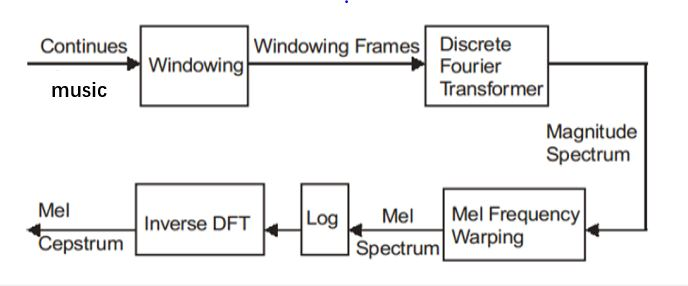
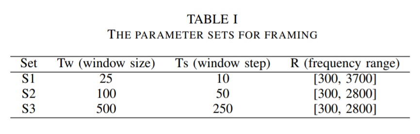
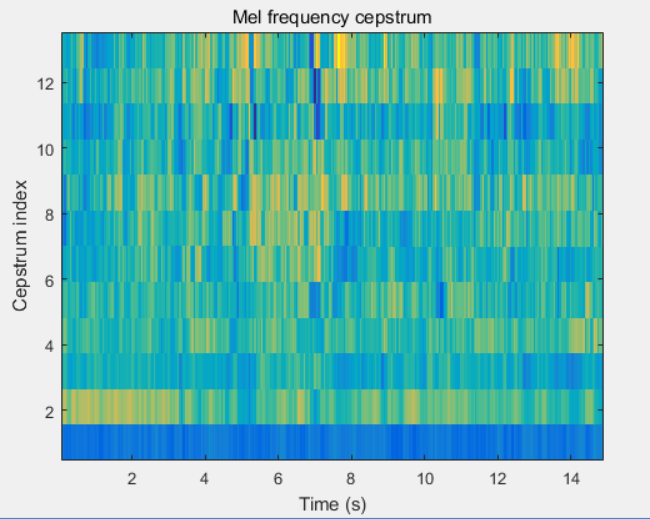
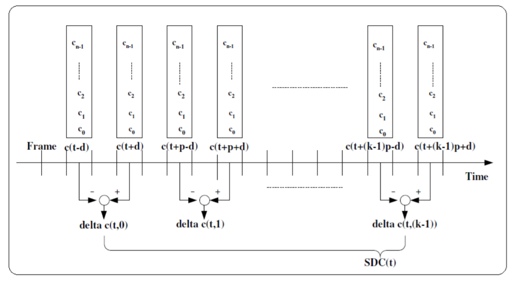

Feature Extraction
The extraction and selection of the best parametric representation of song genres is almost the most important task in the design of our genre detection system. Several features that we have considered and their backgrounds are discussed below.
Timbre Features
Mel-Frequency Cepstrum coefficients
Mel-Frequency Cepstrum coefficients (MFCC) - originally used in voice recognition tasks - have proved particularly useful in describing a song's timbre or tone quality. First, we analyze a song's timbre features. A compact representation would be provided by a set of mel-frequency cepstrum coefficients (MFCC), which are the results of a cosine transform of the real logarithm of the short-term energy spectrum expressed on a mel-frequency scale. The calculation of the MFCC includes the following steps:
Pre-emphasis and Framing
Here, we pass the signal through a high pass filter, \begin{equation} y[n] = x[n] - \alpha x[n-1] \end{equation} Where \(\alpha\) is typically \(0.95\) or \(0.97\). It was noted that higher frequencies are more important for signal disambiguation than lower frequencies. Preemphasis is good for SNR (signal to noise ratio) and potentially avoid the numerical problems of FFT on later stages. After that, we need to split the signal into short-time frames. The rationale behind this step is that frequencies in a signal change over time, so in most cases it does not make sense to do the FFT over entire signal, which will lose information in time domain. We assume that a signal in frequency domain is stationary over a very short period of time \(t\), and it means that we choose our frame as a small interval of time of the song. (As suggested in literature, it would be good to set \(T_w\) as 25 and \(T_s\) as 10) Different parameter sets that we used are shown in the table below.
Windowing, FFT and Power-spectrum
After slicing the signal into frames, we apply a window function such as the Hamming window to each frame. A Hamming window has the following form: \begin{equation} w[n] = 0.54- 0.46\cos(\frac{2\pi n}{N-1} ) \end{equation} The reason for applying a hamming window to the frames is notable. It is used to counteract the assumption made by the FFT that the data is infinite and reduce the spectral leakage effect. We can then do an N-point FFT on each frame to calculate the STFT, where N is typically 256 or 512 (power of 2 is better for computation of FFT). The relationship of sampling frequencies (\(f\)) and number of sampling with frame time (\(t\)) is: \begin{equation} t = \frac{N}{f} \end{equation} Then we compute the power spectrum (periodogram) using the equation as follows: \begin{equation} P =\frac{|FFT(x)|^2}{N} \end{equation}
Mel-frequency wrapping
The final step to computing filter banks is applying triangular filters, typically 20 or 40 filters, on a Mel-scale to the power spectrum to extract frequency bands. This step is necessary because human perception of frequency contents of sounds for speech signal does not follow a linear scale. Thus for each tone with an actual frequency, \(f\), measured in Hz, a subjective pitch is measured on Mel-scale. The mel-frequency scale is a linear frequency spacing below 1000 Hz and a logarithmic spacing above 1000Hz. As a reference point, the pitch of a 1 kHz tone, 40dB above the perceptual hearing threshold, is defined as 1000 mels. Therefore we can use the following approximate formula to compute the mels for a given frequency \(f\) in Hz. \begin{equation} Mel(f) = 2595 * \log(1+\dfrac{f}{700}) \end{equation}
MFCC Coefficients
It turns out that filter bank coefficients computed in the previous step are highly correlated, which could be problematic in our later machine learning algorithms. So we could reduce the dimensionality, and to decorrelate the filter bank coefficients by converting them to the time domain using the discrete cosine transform (DCT). The result is called the Mel Frequency Cepstrum Coefficients. \begin{equation} C_k = \sum_{n=1}^{N-1} \cos[\frac{\pi}{N}(n+\frac{1}{2})k] \end{equation} Typically, literature suggests that 12 coefficients (2-13) is enough, and later coefficients, meaning fast changes in the filter bank, do not contribute much to the sound pattern detection. The first MFCC is discarded as it contains an offset value indicating loudness, so we also discard this value. A typical MFCC Mel frequency cepstrum coefficients plot of one example in our data set is shown below.
MFCC post-processing for KNN
We used MFCC coefficients in our KNN method. To make KNN works, we need to define a distance between two songs. Here, we first model MFCC matrix of each song to a multivariate Gaussian distribution. Then, we used Kullback-Lieber Divergence (also called relative entropy) to determine the distance between any two songs using MFCC coefficients. Here is the equation we defined: \begin{equation} \text{dist} = \text{KLD}(s1||s2)+\text{KLD}(s2||s1), \end{equation} where s1 and s2 are two multivariate Gaussian distributions derived from MFCC coefficients of 2 songs. And KLD is defined as below: \begin{align*} 2\text{KLD}(p||q) =& \log(\frac{|cov(q)|}{|cov(p)|}) + Trace(cov(q)^{-1}cov(p))\\ &+(\mu_p-\mu_q)^T cov(q)^{-1}(\mu_p-\mu_q)-d \end{align*} Here, \(cov(q)\) means the covariance matrix of matrix \(q\) and \(d\) is the dimension of multivariate Gaussian distribution, which is 12 for our case since we used 1st to 13rd coefficients of MFCC for each song. The reason why we add 2 KLD up is that we want to get a symmetric distance function.
Shifted Delta Coefficients
As proposed in several literatures, delta-cepstral features are widely used in speech and language recognition to add dynamic information to the static cepstral features. It interprets signal and captures features from the long duration speech samples, which solves limitations of traditional short time derivation of cepstral features. Combination of MFCC and delta-cepstral features shows better performance in speech recognition as shown in several literatures. For a short-time cepstral sequence \(C[n]\), the delta-cepstral features are typically defined as \begin{equation} D[n] = C[n+m] - C[n-m], \end{equation} where \(n\) is the index of the analysis frames and \(m\) is usually taken as \(2\) or \(3\) in practice. Double-delta cepstral features can be further defined in terms of a subsequent delta-operation on the delta-cepstral features. In more general cases, shifted delta cepstral (SDC) feature vectors are used as an extension of delta-cepstral coefficients. The procedure of calculating SDC feature vector is shown in the above figure. Typically, SDC coefficients depend on four parameters, \(N\), \(d\), \(P\), \(k\), where \(N\) is the number of cepstral coefficients in one vector at each frame, \(d\) is the amount of lag for delta computation, \(P\) is amount of shift for next frame whose deltas are to be computed, and \(k\) is number of frame whose deltas are to be stacked. Suppose at given time \(t\), MFCC vector is given as $$\textbf{c}(t) = [c_0 \quad c_1 \quad ... \quad c_{N-1}],$$ then SDC coefficient vector of k dimension is obtained as $$\textbf{SDC}(t) = [\Delta \textbf{c}(t,0) \quad \Delta \textbf{c}(t,1) \quad ... \quad \Delta \textbf{c}(t,k-1)],$$ where $$\Delta \textbf{c}(t,i) = \textbf{c}(t+i\times P+d)-\textbf{c}(t+i\times P-d). $$ The output matrix \(\textbf{SDC}(t)\) combines with MFCC coefficients vector as the song feature. However, in our study, one song typically has more than 1000 frames, and for each frame, we choose its first 13 MFCCs. The size of \(\textbf{SDC}(t)\) matrix for each song will be quite large, even if we choose the lag amount \(d\), the shift amount \(P\) to be big numbers, which will lead to a huge computation cost in further machine learning process. Besides that, we also have studied other possible methods to reduce the matrix size, for example taking the mean value, but it will hurt the final performance. Therefore, we do not use \(\textbf{SDC}\) as song features.
Symbolic Features
Linear Predictive Coding
Linear Predictive Coding (LPC) is another method of separating out the effects of source and filter from a speech signal. Similar in intention to cepstral analysis, LPC uses different methods. LPC can be considered as a coding method - a way of encoding the information in a speech signal into a smaller space for transmission over a restricted channel. LPC encodes a signal by finding a set of weights on earlier signal values that can predict the next signal value: \begin{equation} y[n] = a[1]y[n-1] + a[2]y[n-1] + a[3]y[n-3] + e[n]. \end{equation} LPC relies on being able to find these values of \(a[1..k]\) with \(k\)th order, which can be obtained by several algorithms, including Levinson-Durbin algorithm. The result of LPC analysis then is a set of coefficients \(a[1..k]\) and an error signal \(e[n]\). The error signal will be as small as possible and represents the difference between the predicted signal and the original. In this project, we use \(5\)th order of LPC, which means we take \(a[1..5]\) coefficients as the song features.
Zero-crossing rate
The zero-crossing rate is the rate of sign-changes along a signal, i.e., the rate at which the signal changes from positive to negative or back. Intuitively, if the number of zero crossings are more in a given signal, then the signal is changing rapidly and accordingly the signal may contain high frequency information. Thus ZCR gives an indirect information about the frequency content of the signal. \begin{equation} ZCR = \frac{\Sigma_{n=1}^{N}sgn(x[n])-sgn(x[n-1])}{2N} \end{equation}
Short-time energy
Also, we studied the short-time energy (STE). The energy associated with music is time varying in nature. Hence we are interested in the normalized variance of the short-time energy over the whole music input to show how the strength of the music varied with time. \begin{equation} E(\hat{n}) = \sum\limits_{m = -\infty}^\infty (x[m]w[\hat{n}-m])^2 = \sum\limits_{m = -\infty}^\infty (x[m])^2 \tilde{w} [\hat{n}-m] \end{equation}
Spectral-centroid
Besides, we studied the Spectral-centroid, which is a good reflection of the spectrum. It indicates where the "center of mass" of the spectrum is. Perceptually, it has a robust connection with the impression of "brightness" of a sound. It is calculated as the weighted mean of the frequencies present in the signal, determined using a Fourier transform, with their magnitudes as the weights: \begin{equation} Spectral\_centroid = \frac{\sum_{n=0}^{N-1}f(n)x(n)}{\sum_{n=0}^{N-1}x(n)}, \end{equation} where \(x(n)\) is the weighted frequency magnitude, and \(f(n)\) is the center frequency of the bin with bin number \(n\).
Spectral-flux
Spectral flux, which is also called delta spectrum magnitude, is the 2-norm of the frame-to-frame spectral amplitude difference vector, \(|||\textbf{X}_i|-|\textbf{X}_{i+1}|||\). Intense music has a higher rate of change, and goes through more drastic frame-to-frame changes than less intense one does. Typically, this value is higher for metal, disco music, and lower for classical music.
Spectral rolloff
Spectral rolloff is defined as the Nth percentile of the power spectral distribution, where N is usually 85% or 95%. The rolloff point is the frequency below which the N% of the magnitude distribution is concentrated. The feature is not used in our final decision tree analysis, and the reason is elaborated in Discussion: Section.
Chord Features
Besides the features listed above, we also thought about some mid-level features, like the chord features that will show the tonality of the song. We read Matthias Mauch's thesis. His "baseline" algorithm consists in:
- Extracting a STFT of the signal with rather large windows (in the hundreds of ms range).
- Mapping this to a constant-Q representation by upsampling and projection.
- Applying several contrast enhancing and whitening operations to the constant-Q spectrogram to compensate for the "horizontal" decay and "vertical" decay.
- Using non-negative least-square to describe each slice of the constant-Q spectrogram as a sum of a small number of positively weighted harmonic combs.
- Converting the \(f_0\) of the extracted combs to a 12-tones scale (so called "chroma vectors").
- Matching the chroma vectors to a dictionary of hundreds of manually defined templates corresponding to chords.
- Using a HMM model to smooth the sequence of detected chords.